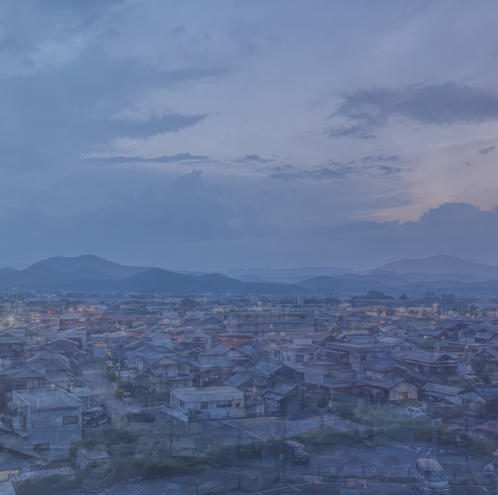
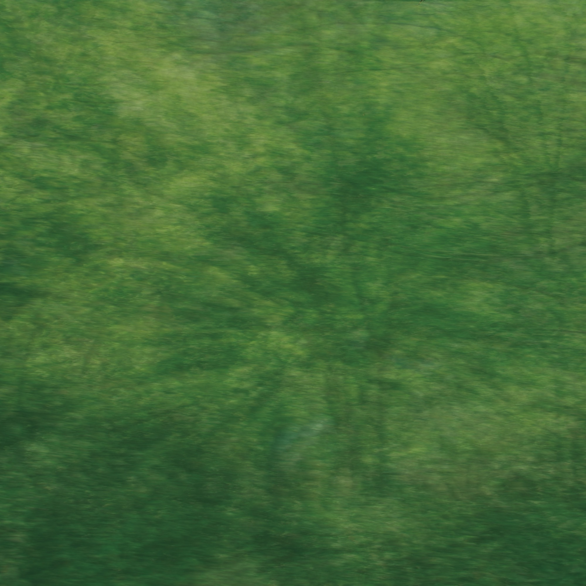
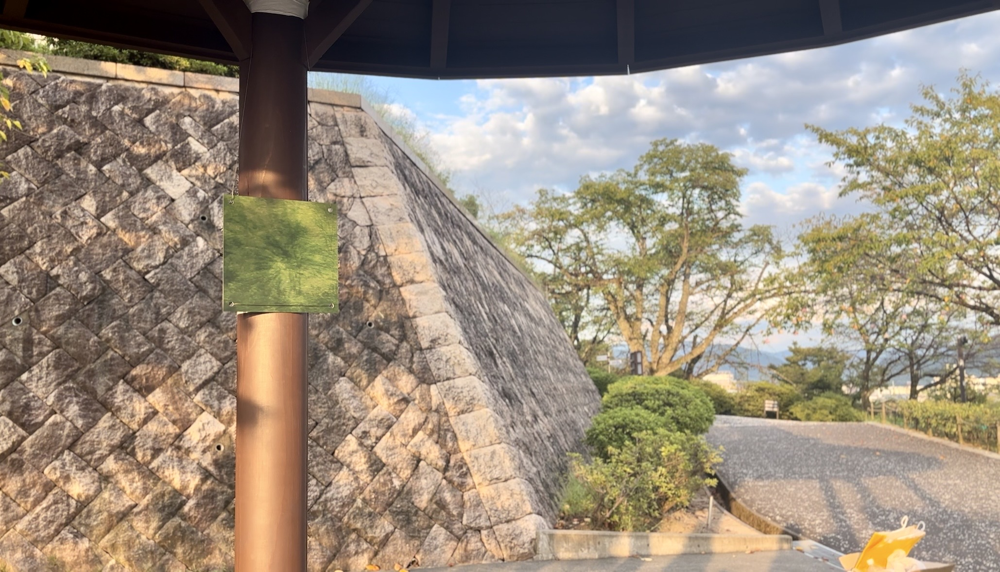
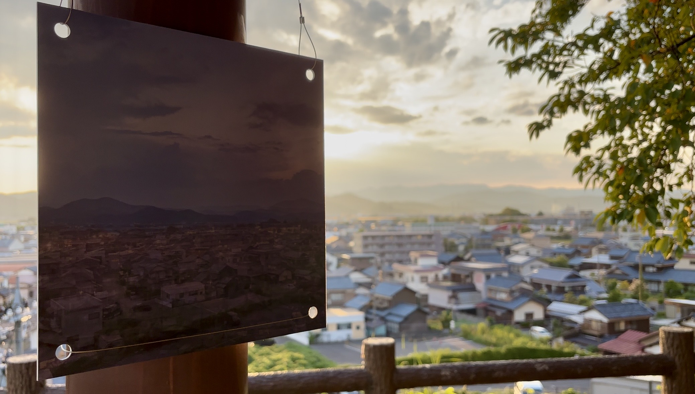
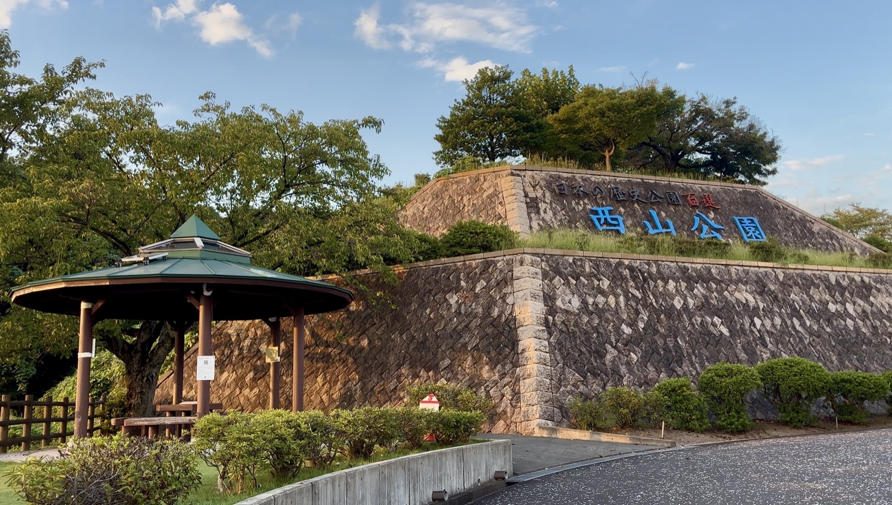
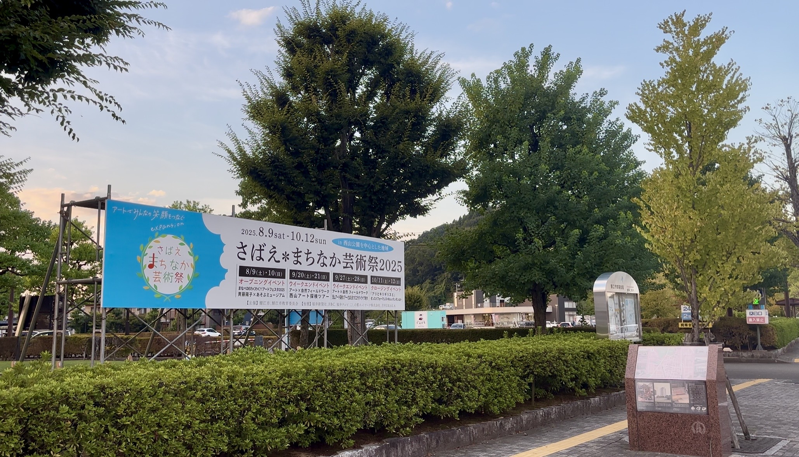
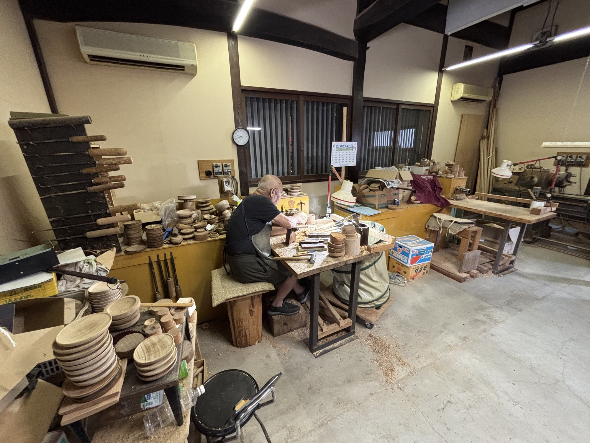

Work — 2025
Resonance

作品要旨
Statement本作は、「そこ」に存在する様々な「境界線の響き合い」を解釈・表現する、サイトスペシフィックな サウンド・インスタレーションである。AR技術、WEBアプリによる参加型システム、物理パネル、 フィールドレコーディング楽曲という複数のメディアを往来し、ある土地や音をめぐる「関係性」を 可聴化する手法を提案した。
Shorelineへの応答
Sasebo Sound Chronicle Award ファイナリスト選出本楽曲「Resonance－響き合い」は、Sasebo Sound Chronicle Awardのテーマ「Shoreline」への 応答として制作した。鯖江でのフィールドレコーディングのみを使用し、「日常」は音を通じて 横（関係性）・縦（歴史）に繋がり循環すると捉え、その流動性を横・縦・循環の三軸で再構成した。 横の繋がりは「水・響き」で普遍性を、縦は「伝統・職人」の音で時間の堆積を、それらが絶えず 循環する様は「鐘」の音でShorelineの持つ永続性を表現した。
Kuniyuki氏： 「極めてコンセプチュアル。音の断片の組み立てにストーリー性があり、強いインパクトがある。」
蓮沼執太氏： 「環境音だけで編まれた音楽。その高い構成力に驚いた。歴史に対する視点と響きの広がりが シンクロしており、鐘のモティーフの扱いも見事。」
技術スタック
DAW：Logic Pro（環境音の解体・楽曲制作・立体音響編集）
Design：Adobe Photoshop / Illustrator（展示パネル・UIデザイン・ビジュアル構築）
System：WebAR、独自バックエンド（音声自動削除システム）
写真
Photos





